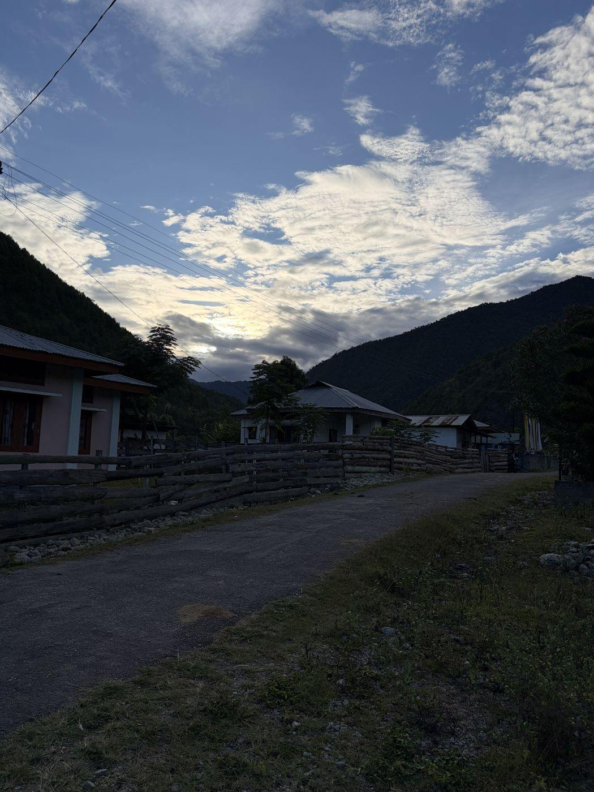

Who we are.
We are the Bugun. [What we call ourselves.] About 1,500 of us live in the hills of West Kameng, and Singchung is our main village.
[Bichom’s own story, in an elder’s words: how the families came here and what the place was called.]— [the elder, only if they agree to be named]